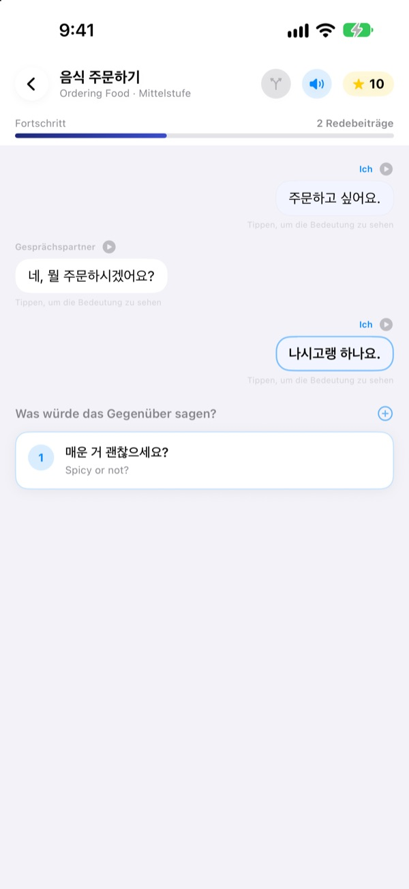
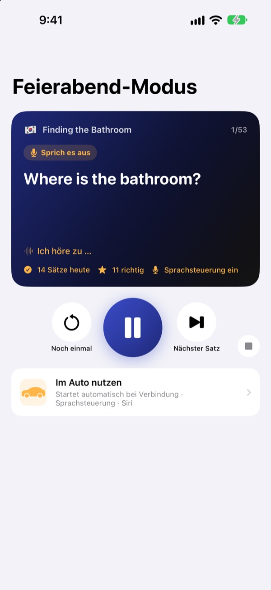
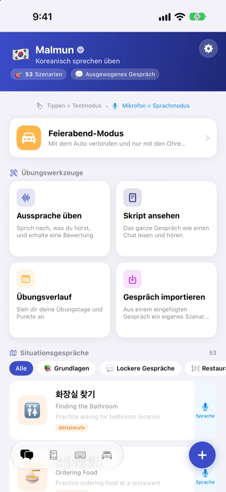
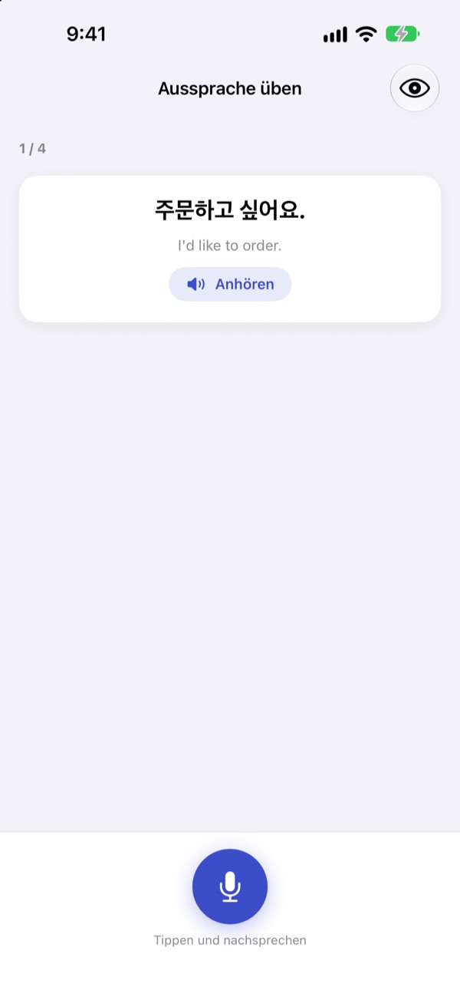

Nicht mehr stocken.
Einfach anfangen.
Malmun ist ein Gesprächstrainer, bei dem jede Antwort, die du wählst, den Dialog in eine andere Richtung lenkt. Lerne Koreanisch, Japanisch, Chinesisch, Spanisch oder Indonesisch und übe im Auto nur mit den Ohren und deiner Stimme.
Verzweigte Dialoge, Ausspracheübung und Vokabeln sind kostenlos.

Führ das Gespräch selbst weiter
Das ist „Guten Morgen“, ein indonesischer Dialog direkt aus der App. Mit jedem Satz, den du wählst, läuft das Gespräch woandershin.
Den Satz auswendig gelernt, und dann fehlt die Antwort?
Im Lehrbuch laufen Dialoge immer nach Plan. Echte Menschen antworten mit etwas, das du nicht erwartet hast. Mit Malmun gehst du vorher alle Abzweigungen eines Gesprächs durch, damit du den nächsten Satz parat hast, egal was kommt. Sogar die Heimfahrt wird zur Übungszeit.
Beim Fahren mit den Ohren üben
Der Feierabend-Modus spielt über Bluetooth oder CarPlay aus den Autolautsprechern. Du hörst zuerst die Bedeutung, nach einem Signalton sprichst du selbst, dann kommt die Lösung einmal langsam und einmal in normalem Tempo.
Mit den Lenkradtasten springst du weiter oder wiederholst, und wenn du dran bist, sagst du einfach next, again oder slower. Bei Navigationsansagen pausiert die Übung.

Alle Situationen für Reise und Alltag
Jede Sprache hat 53 Situationsgespräche: Grundlagen und Alltagsgespräche, Restaurant, unterwegs, Flughafen, Hotel, Shopping, Sightseeing und Notfälle.
Wer Indonesisch lernt, bekommt noch mehr: 5 handgeschriebene Smalltalk-Szenarien, 3 Tageskurse mit je 6 Szenen samt Wochenplan und 100 Wörter für die Geschäftsreise.

Prüfen, ob es richtig klang
Die Ausspracheübung gibt dir eine Punktzahl und markiert farbig, welche Wörter gesessen haben und welche nicht.
In der Skriptansicht liegt der ganze Dialog wie ein Chat vor dir. Hör ihn am Stück an oder blende die Bedeutungen aus und teste dich selbst.

In drei Schritten loslegen
- 1
Sprache wählen
Tippe oben auf dem Startbildschirm auf die Flagge. Ausdrücke und Vokabeln werden für jede Sprache getrennt gespeichert.
- 2
Einen Dialog öffnen
Tippe Antworten im Textmodus an, oder tippe aufs Mikrofon und sprich. Der Sprachmodus findet die passendste Antwort.
- 3
Im Auto: Feierabend-Modus
iPhone mit dem Auto verbinden, Wiedergabe drücken, fertig. Aufs Display musst du nicht schauen.
Feierabend-Modus steuern
- Lenkrad: nächster Titel
- Nächster Satz
- Lenkrad: vorheriger Titel
- Derselbe Satz noch einmal
- Wiedergabetaste
- Pause und weiter
next·skip- Nächster Satz
again·repeat- Noch einmal hören
slower·faster- Vorlesetempo ändern
next scene- Zum nächsten Dialog
stop·pause- Übung beenden
- Siri: „Feierabend-Übung in Malmun starten“
- Starten, ohne das iPhone anzufassen
Wenn die App auf Deutsch läuft, sprichst du die Befehle auf Englisch. Sie werden nur gehört, wenn du nach dem Signalton dran bist. Der aktuelle Satz erscheint in der Wiedergabeanzeige des Autos. Einen eigenen CarPlay-Bildschirm gibt es nicht.
Fast alles ist kostenlos. Malmun Pro schaltet den Rest frei.
Kostenlos
- Verzweigter Smalltalk und Tageskurse (Indonesisch)
- Situationsgespräche: Grundlagen und Alltag
- Feierabend-Modus, 3 Szenen pro Tag
- Ausspracheübung, Skriptansicht, Dialogimport, Übungsverlauf
- Meine Ausdrücke, Vokabelkarten, Ausdruckstastatur
- Szenarien mit Freunden teilen, Szenarien mit KI erstellen
Malmun Pro
- Alle Situationsgespräche: Restaurant, unterwegs, Flughafen, Hotel, Shopping, Sightseeing, Notfälle
- Feierabend-Modus ohne Limit
- Gilt für alle Lernsprachen
Jahresabo oder einmaliger Lifetime-Kauf
Die Preise findest du in der App und im App Store. Das Jahresabo verlängert sich automatisch, wenn du es nicht spätestens 24 Stunden vor Ablauf kündigst.
Häufige Fragen
Welche Sprachen kann ich lernen?
Koreanisch, Japanisch, Chinesisch, Spanisch und Indonesisch. Die Bedienoberfläche ist auf Deutsch, die Bedeutungen der Übungssätze und die Sprachbefehle sind aber auf Englisch. Deshalb steht Englisch selbst nicht zur Auswahl.
Wie nutze ich die App im Auto?
Verbinde dein iPhone per Bluetooth oder CarPlay, öffne den Feierabend-Modus und starte die Wiedergabe. Der Ton kommt aus den Autolautsprechern, der aktuelle Satz erscheint unter „Aktuelle Wiedergabe“. Du kannst auch zu Siri sagen: „Feierabend-Übung in Malmun starten“. Oder richte einmalig in der Kurzbefehle-App ▸ Automation ein, dass die Übung startet, sobald CarPlay (oder das Bluetooth deines Autos) verbunden ist.
Hört das Mikrofon die ganze Zeit mit?
Nein. Es hört nur, wenn du nach dem Signalton dran bist, über das iPhone-Mikrofon, und das Gehörte wird auf deinem Gerät verarbeitet.
Meine Aussprache wird nicht erkannt.
Die Spracherkennung läuft in der Sprache, die du lernst. Versuch es an einem ruhigeren Ort und prüfe, ob die Spracherkennung für diese Sprache auf deinem Gerät geladen ist.
Wie füge ich die Tastatur hinzu?
Öffne Einstellungen ▸ Allgemein ▸ Tastatur ▸ Tastaturen ▸ Neue Tastatur hinzufügen und wähle die Malmun-Tastatur. Beim Schreiben wechselst du mit der Globustaste. Voller Zugriff ist nicht nötig. Welche Ausdrücke erscheinen, stellst du über das Tastatursymbol unten rechts auf dem Startbildschirm ▸ Tastatur verwalten ein.
Ich sehe ein Szenario nicht, das mein Freund geteilt hat.
Das Teilen läuft über iCloud, ihr müsst also beide in iCloud angemeldet sein. Erscheint es trotzdem nicht, beende die App vollständig und öffne sie erneut.
Was brauche ich, um Szenarien mit KI zu erstellen?
Hinterlege deinen eigenen Anthropic-API-Schlüssel in der App und gib ein Thema ein, dann entsteht ein neuer Dialog. Alles andere funktioniert auch ohne Schlüssel.
Wie kündige ich oder bekomme eine Erstattung?
Zahlungen wickelt Apple ab. Kündigen kannst du auf dem iPhone unter Einstellungen ▸ Apple Account ▸ Abonnements ▸ Malmun. Eine Erstattung beantragst du bei Apple unter reportaproblem.apple.com.
Neues iPhone, und Pro ist weg.
Melde dich mit demselben Apple Account an und tippe in Malmun auf Einstellungen ▸ Malmun Pro ▸ Käufe wiederherstellen.
Wo wird mein Lernfortschritt gespeichert?
Du brauchst kein Konto. Deine Daten bleiben auf deinem Gerät und in deiner eigenen iCloud. Keine Werbung, kein Tracking, nur anonyme Nutzungsstatistiken und Fehlerberichte. Fehler und Wünsche kannst du auch auf GitHub Issues (github.com/M1zz/IndonesianSmallTalk/issues) melden.
Fragen oder Feedback? Schreib an leeo@kakao.com, über Einstellungen ▸ Feedback senden in der App oder auf Instagram an @lee25_ios.